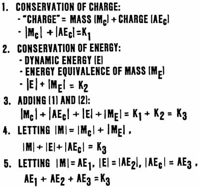

SLIDE 19.
CONSERVATION OF ANENERGY
(AE):
(AN EXPANDED ENERGY CONSERVATION LAW)

| We
briefly show a simplified derivation of the new conservation of anenergy
law. We express the conservation of charge law by correcting the term "charge" to show its true meaning: charged mass. We use the absolute value symbol to mean the "anenergy equivalency." As shown on the slide, we account separately :for the mass (m-sub-c) of the conserved charges and the virtual particle charge flux (the anenergy -- AE-sub-c) of the charges conserved. That law now says that the absolute values of the masses and the massless charge fluxes have a total constant summation. For a dynamic mass, we do a similar thing, in this simplified case ignoring potential energy of position, and taking the energy equivalence of the dynamic energy (M-sub-E) and the rest mass energy of the particles, M-sub-E. The conservation of energy now states that these two terms have a constant absolute value summation. We add equations 1 and 2, getting equation 3. We consolidate like terms to get equation 4. Expressing all terms in their anenergy equivalencies (absolute values), we get equation 5, which is the overall conservation of anenergy equivalency. Note that we now can change mass into energy or anenergy (massless charge), energy into mass or anenergy, and anenergy into mass or energy. Thus we can turn everything into pure vacuum ether (pure massless charge, pure anenergy, pure electrostatic scalar potential, pure stress on spacetime) or we can turn part of the vacuum into energy or particles of mass. Vacuum now becomes a very real thing indeed. It is pure anenergy. Pure massless charge, pure electrostatic scalar potential, pure "broken bits" (subquantal bits) of (quantized) energy. The vacuum is identically the virtual state. It is not an emptiness filled with virtual things; rather, it IS the sum total of those virtual things, for they are totally unseparated until some sort of "conceptual observation" is invoked. Physics should have adopted Einstein's suggestion that the vacuum, complete with its EM and gravitational fields, be called the ether. |